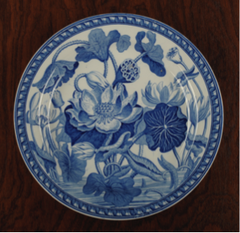
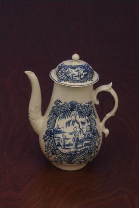

Collecting antique British blue and white china in New Zealand
Martin Wallace (text) and Mark Forster-King (images)
This is an account of my experiences over thirty years of collecting antique British blue and white china in New Zealand. I have included a history of the development of this form of earthenware, with a brief history of each maker represented in the collection. I have put together a plan for recognition of maker, and dating of individual pieces.
The collection (100 pieces) is shown with stunning photography by Mark Forster-King. The images display the beauty, variety, and history of these objects.
I have gathered details about many of the museum collections in New Zealand, and I emphasize reference opportunities in our country.
An extensive bibliography serves as an introduction to the large volume of written work on the subject, again with an emphasis on New Zealand library resources.
Access is free, download (pdf).
I am a retired renal physician, living in Hamilton, New Zealand.
Mark Forster-King is a clinical photographer at the Waikato Hospital, where he and I met. Mark is a recognized specialist in his field.
Contact Martin.